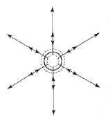
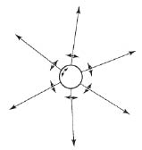
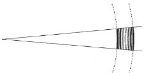

Washington’da çıkan bir dedikodu, yayılmasında payı olan kişilerden hiçbiri Washington ile New York arasında yolculuk yapmasa bile, çabucak New York’a ulaşır. Burada, tümüyle farklı iki hareket söz konusudur: Söylentinin Washington’dan New York’a hareketi ve söylentiyi yayan kimselerin hareketi. Yel, bir ekin tarlasının üzerinden eserken, bütün tarla boyunca yayılan bir dalga yaratır. Burada da, dalganın hareketini ve yalnız hafif salınımlarla kımıldayan tek tek bitkilerin hareketini birbirinden ayırt etmeliyiz. Bir su birikintisine taş atılınca, gittikçe büyüyen çemberlerle yayılan dalgaları hepimiz görmüşüzdür. Dalganın hareketi, su taneciklerininkinden çok farklıdır. Tanecikler, yalnız bir aşağı bir yukarı gidip gelir. Dalganın gözlenen hareketi, bir madde durumunun hareketidir ve maddenin kendisinin hareketi değildir. Suda yüzen bir mantar, bunu açıkça gösterir; çünkü, dalga boyunca sürüklenecek yerde, bir aşağı, bir yukarı hareket eder.
Dalganın mekanizmasını daha iyi anlamak için düşünselleştirilmiş bir deney tasarlayalım. Büyük bir kabın su ile, ya da hava ile, ya da başka bir ortam (medium) ile bir-biçim dolu olduğunu varsayalım. Kabın ortalarında bir yerde, bir küre var. Deneyin başlangıcında hiç hareket yok. Küre, birdenbire, ritmik olarak “solumaya”, küresel biçimini yitirmemekle birlikte, hacmini büyültüp küçültmeye başlıyor. Kaptaki ortamda ne olur? İncelememize, kürenin genişlemeye başladığı andan başlayalım. Ortamın kürenin hemen yakınındaki tanecikleri çevreye doğru itiliyor ve bunun sonucu olarak, suyun, ya da havanın, seçtiğimiz ortam ne ise onun, küresel kılıfının yoğunluğu, normal değerinin üstüne çıkarılıyor. Bunun gibi küre büzülünce, ortamın küreyi doğrudan doğruya saran kesiminin yoğunluğu azalacaktır. Bu yoğunluk değişmeleri bütün ortamda yayılır. Ortamı oluşturan tanecikler yalnız küçük titreşimler gösterir, ama hareketin tümü, ilerleyen bir dalganın hareketidir. Burada yeni başlıca şey, hareketi, ilk kez madde olmayan bir şeyin hareketi, yani maddeden geçerek yayılan enerji saymamızdır.
Yürek gibi çarpan küre örneğinden yararlanarak, dalgaların tanımlanması için önemli olan iki genel fizik kavramını sunabiliriz. Birincisi, dalganın yayılma hızıdır. Bu, ortama bağlı, ve örneğin su ya da hava için farklı olacaktır. İkinci kavram, dalga-boyudur. Bu, bir denizdeki ya da ırmaktaki dalgalarda, bir dalga çukuru ile onu izleyen dalga çukuru, ya da bir dalga tepesi ile onu izleyen dalga tepesi arasındaki uzaklıktır. Onun için, deniz dalgalarının dalga-boyu, ırmak dalgalarınınkinden daha büyüktür. Bir yürek gibi çarpan kürenin yaydığı dalgalarda, dalga-boyu, belirli bir anda en büyük ya da en küçük yoğunluğu gösteren komşu iki küresel kılıf arasındaki uzaklıktır. Bu uzaklığın yalnız ortama bağlı olmayacağı bellidir. Kürenin yürek gibi çarpma oranının, elbette büyük bir etkisi olacaktır. Dalga-boyu, çarpma hızlanınca daha kısa, yavaşlayınca daha uzun olacaktır. [Şekil-36]
Bu dalga kavramı, fizikte büyük başarı ile sınanmıştır ve kesinlikle mekanik bir kavramdır. Görüngü (phenomenon), maddenin kinetik teorisine göre, maddeyi oluşturan taneciklerin hareketine indirgenmiştir. Bundan ötürü, dalga kavramına başvuran her teori, genellikle, mekanik bir teori sayılabilir. Örneğin, akustik olayların açıklanması, özellikle bu kavrama dayanır. Ses kirişleri, keman telleri gibi titreşen cisimler, havada, yürek gibi çarpan küre örneğindeki gibi yayılan ses dalgalarının kaynaklarıdır. Demek ki bütün akustik görüngüler, dalga kavramına başvurularak, mekanik görüngülere indirgenebilir.

[Şekil-36]
Taneciklerin hareketi ile ortamın bir durumu olan dalganın kendisinin hareketini birbirinden ayırt etmemiz gerektiğini önemle belirtmiştik. Bunların ikisi birbirinden çok farklıdır, ama yürek gibi çarpan küre örneğimizde, her iki hareketin de aynı doğru çizgi üzerinde olduğu bellidir. Ortamın tanecikleri, kısa doğru parçaları boyunca gidip gelir (salınır), ve yoğunluk, bu harekete uygun ve dönemli (periodic) olarak azalıp çoğalır. Dalganın yayıldığı yön ile salınımların doğrultusu aynıdır. Bu dalga çeşidine boyuna (longitudinal) dalga denir. Peki ama, bu, biricik dalga çeşidi midir? Enine (transverse) denen başka bir dalga çeşidi daha olduğunu anlamak, bundan sonraki incelemelerimiz için önemlidir.
Önceki örneğimizde değişiklik yapalım. Küre gene var, ama farklı bir ortamda, suda ya da havada değil de, bir çeşit peltede bulunuyor. Bundan başka, küre artık yürek gibi çarpmıyor, ama küçük bir açının içinde, önce bir yönde ve sonra gene geriye (ters yönde), hep aynı ritimle ve belirli bir eksende dönüyor. [Şekil-37] Pelte, küreye sıvanır, ve sıvanan kesimleri harekete katılmaya zorlanır. Bu kesimler, biraz uzaktaki kesimleri aynı harekete uymaya zorlar, vb., dolayısıyla ortamda bir dalga yayılır. Ortamın hareketi ile dalganın hareketi arasındaki farkı göz önünde tutarsak, burada, ikisinin aynı çizgi üzerinde olmadığını görürüz. Dalga kürenin yarıçapının yönünde yayılır, oysa peltenin kesimleri buna dik yönde hareket eder. Böylece enine bir dalga yaratmış oluruz.

[Şekil-37]
Su yüzünde yayılan dalgalar eninedir. Suda yüzen bir mantar, yalnız bir aşağı bir yukarı, iner ve çıkar; ama dalga yatay bir düzlemde yayılır. Öte yandan, ses dalgaları, boyuna dalgaların en iyi bilinen örneğidir.
Bir noktayı daha belirtmek istiyoruz: Türdeş (homogenous) bir ortamda yürek gibi çarpan ya da salınan bir kürenin yarattığı dalga, küresel bir dalgadır. Dalgaya bu adın verilmesi, belirli herhangi bir anda kaynağı çevreleyen herhangi bir küre üzerindeki bütün noktaların aynı biçimde davranmasındandır. Böyle bir küre yüzeyinin kaynaktan çok uzak bir kesimini ele alalım. [Şekil-38] Bu kesim, ne kadar uzakta ise, ve onu ne kadar küçük almışsak, o kadar çok bir düzleme benzer. Aşırı ince eleyip sık dokumadan diyebiliriz ki, bir düzlem parçası ile yarıçapı yeterince büyük bir kürenin yüzeyinin bir parçası arasında önemli bir fark yoktur. Kaynaktan çok uzaklaşmış bir küresel dalganın küçük kesimlerinden, sık sık düzlem dalgalar diye söz ederiz. 38. şekildeki taralı kesimi, kürelerin merkezinden ne kadar uzağa koyarsak ve iki yarıçap arasındaki açıyı ne kadar küçük alırsak, bir düzlem dalgayı o kadar iyi tanımlamış oluruz. Düzlem dalga kavramı, başka birçok fizik kavramı gibi, ancak belirli bir ölçüde tam olarak gerçekleştirilebilen bir sayıntıdan (fiction) başka bir şey değildir. Ancak, bu kavram, ileride başvuracağımız yararlı bir kavramdır.

[Şekil-38]